Himi, Toyama: things to do, food and stays
Himi · Toyama
Himi
Highlighted on the Toyama map.

Stay
きらめく海と特別な時間 氷見オーベルジュ Hashimotoya
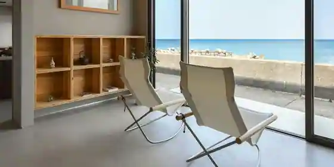
Kirameku Umi To Tokubetsu Na Jikan Himi Oberuju Hashimotoya
氷見天然温泉「しおさいの湯」 ルートイングランティア氷見 和蔵の宿
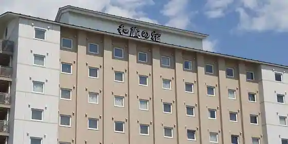
Himi Tennen Onsen (Shiosaino Yu) Route Inn Guranteia Himi Wazo No Yado
Inn at Himitennen Onsen in Kano, Himi with a large communal bath; 8-minute drive from Himi Station.
氷見温泉郷くつろぎの宿うみあかり
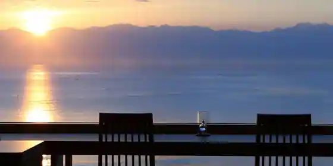
Himi Onsen Sato Kutsurogino Yado Umiakari
Inn at Himi Onsen in Unami, Himi.
プライベートサウナと氷見和牛鉄板焼きの宿～GYU-YA VILLA～
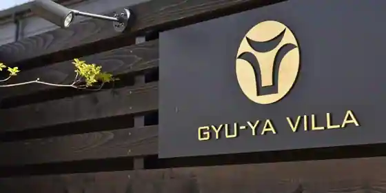
Puraibetosauna To Himi Wagyu Teppanyaki Kino Yado ~GYU-YA VILLA~
Inn in Asahioka, Himi with one group per day and a sauna.
湯の里いけもり別館AMAZA～天座～
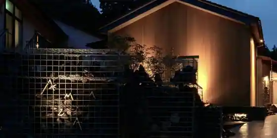
Yu No Sato Ikemori Bekkan AMAZA~ Za ~
Inn at Rudezainno Onsen in Yubisaki, Himi with a quiet countryside setting.
氷見の旬を食する味わいのホテル信貴館
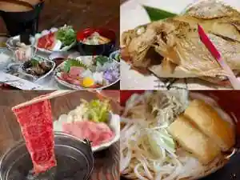
Himi No Jun Wo Shokusu Ru Ajiwa Ino Hotel Shigi Kan
たきの荘
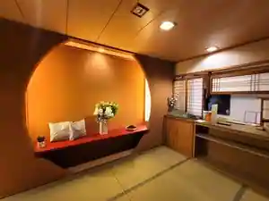
Takino So
池田屋旅館
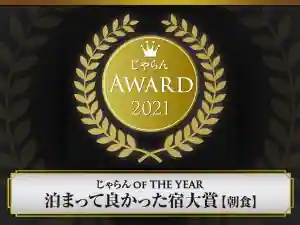
Ikeda Ya Ryokan
Ryokan inn in Hokudai, Himi with local seafood dinners.
プライベートサウナと氷見牛鉄板焼～GYU-YA VILLA～
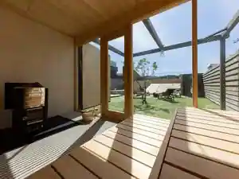
Puraibetosauna To Himi Ushi Teppanyaki ~GYU-YA VILLA~
Inn in Asahioka, Himi with a sauna.
氷見天然温泉 ルートイングランティア氷見 和蔵の宿
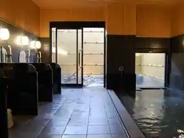
Himi Tennen Onsen Route Inn Guranteia Himi Wazo No Yado
Inn at Himitennen Onsen in Kano, Himi with Wi-Fi.
天然温泉民宿與市郎
Tennen Onsen Minshuku Yoichi Ro
民宿あお
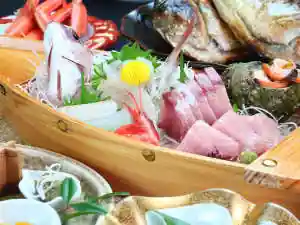
Minshuku Ao
Dining
鮨よし
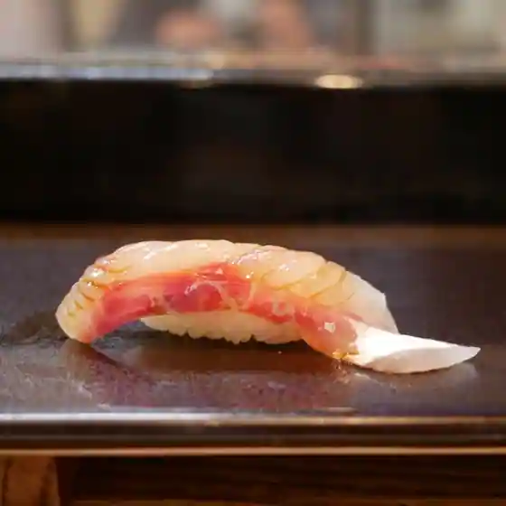
Sushi Yoshi
貪瞋癡
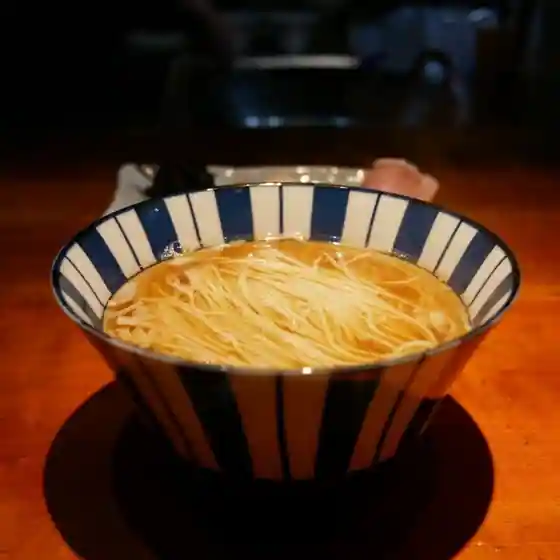
Tonjin Chi
セイズファーム
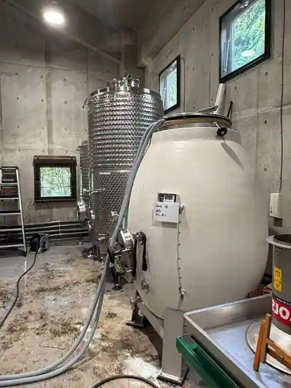
Seizufamu
ひみ浜
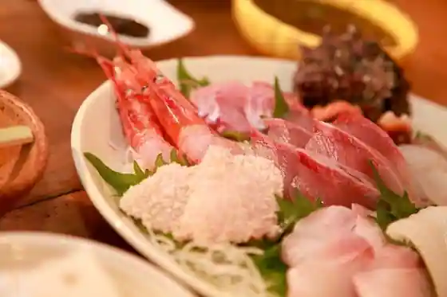
Himi Hama
すし屋の城光
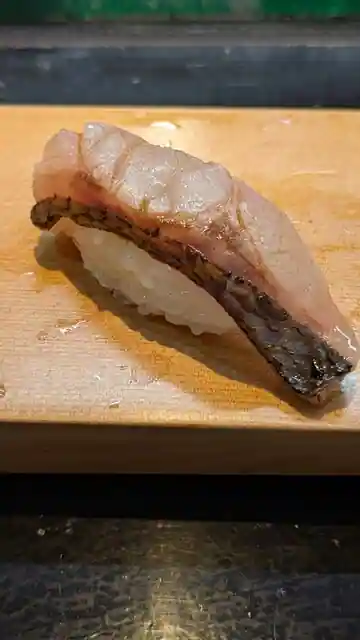
Sushi Ya No Shiro Hikari
氷見 魚市場食堂
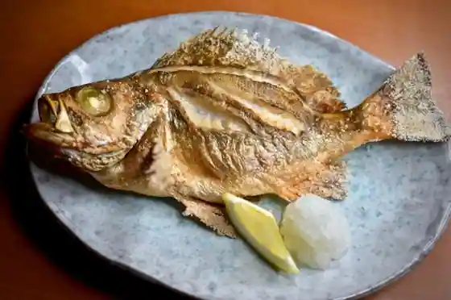
Himi Uoichiba Shokudo
成希
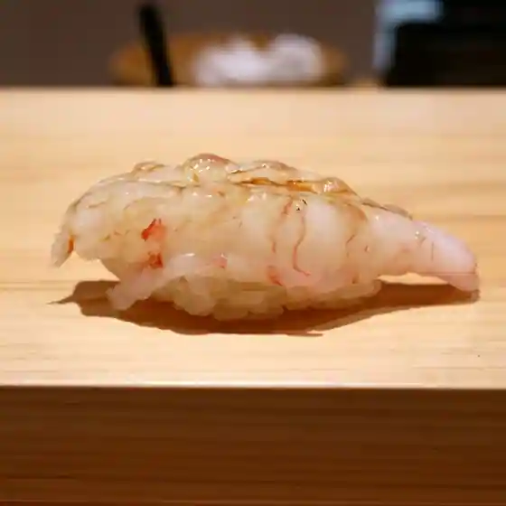
Sei Mare
氷見牛専門店 たなか
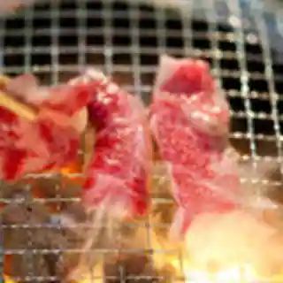
Himi Ushi Senmon Tanaka
割烹しげはま
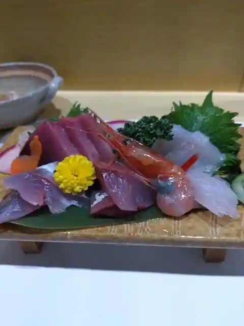
Kappo Shigehama
氷見すしのや
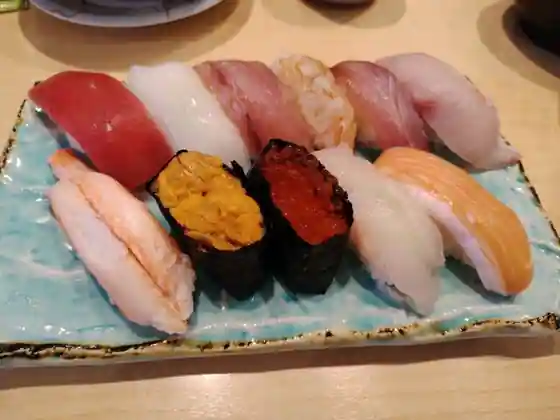
Himi Sushinoya
氷見牛ステーキ＆ワイン レストラン トロイカ
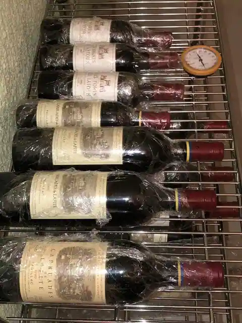
Himi Ushi Steak & Wa Inn Restaurant Toroika
うどん茶屋 海津屋
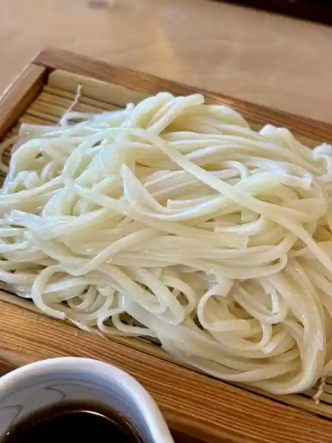
Udon Chaya Kaizu Ya
居酒屋 まる甚
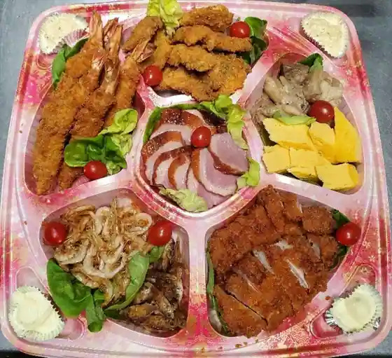
Izakaya Maru Jin
廻鮮氷見前寿し
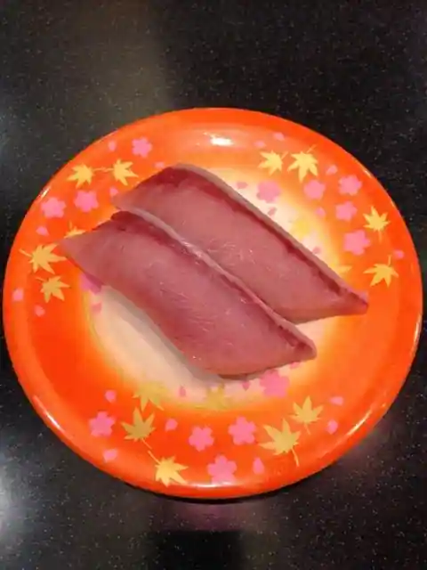
Kaisen Himi Mae Hisashi Shi
ひみ岸壁市場
Himi Ganpeki Shijo
氷見きときと寿し 氷見本店
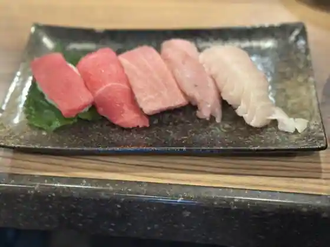
Himi Kitokito Hisashi Shi Himi Hon
氷見 牛屋 本店
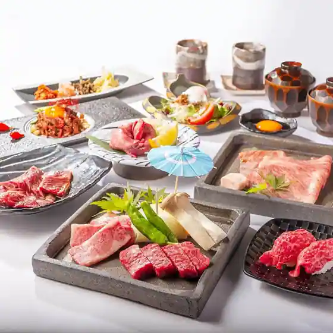
Himi Ushiya Hon
番屋亭
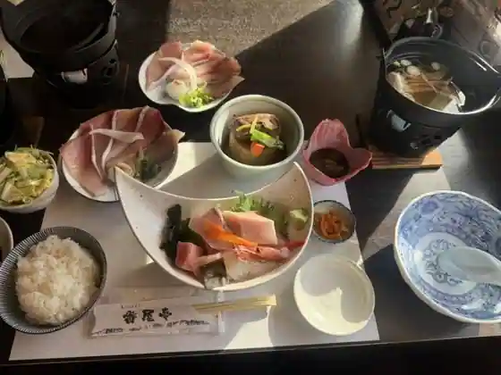
Banya Tei
ヴィヴァーチェ ひみ番屋街店
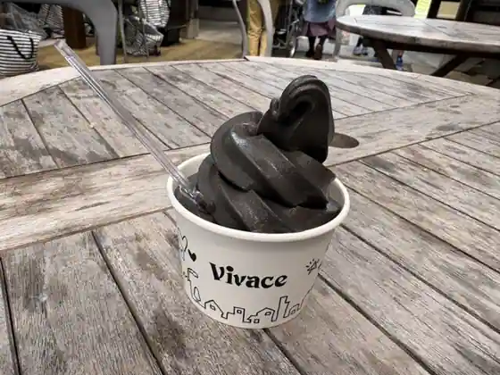
Vivache Himi Banya Machi
ひみぷりん
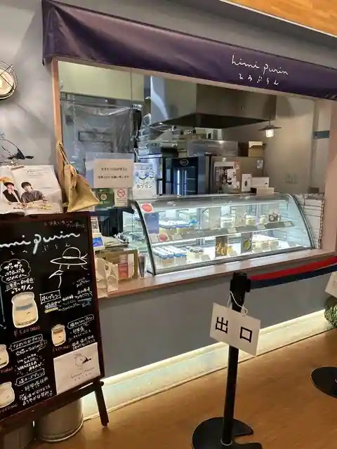
Himipurin
番屋 氷見うどん
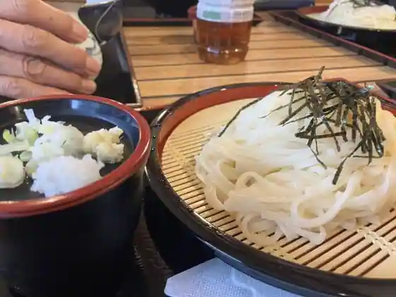
Banya Himi Udon
お食事ができる製麺所 なごみ
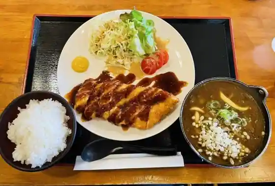
O Shokuji Gadekiru Seimen Tokoro Nagomi
松葉寿司
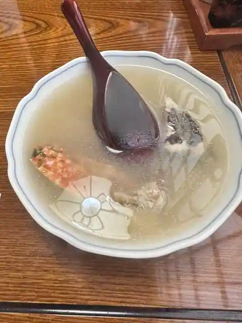
Matsuba Sushi
食彩居酒屋 灘や
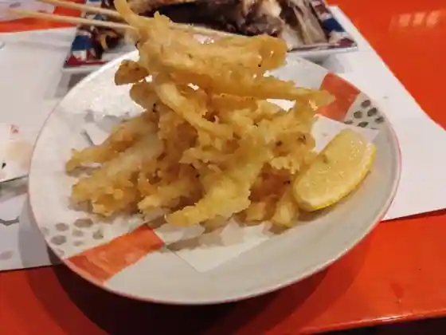
Shokusai Izakaya Nada Ya
Sights
Himi Fishing Port Jogai Market (Himi Banya Machi) / Himi Onsen Sato (Soyu)

Himi Onsen Sato Kutsurogi no Yado Umiakari

Kitokito Sushi Himi Main Shop

Manga Rodo

Sushi no Ya
Toyamaken Saibai Gyogyo Center
Noto Han Shima Kokutei Park Himi Onsen Sato
Himi Shiokaze Gyararii (Fujikofujio A Atokorekushon)
Kyu Dono Hama Onsen
Himi Gyogyo Bunka Koryu Center
Himi Fishing Port no Asa Seri
Himi Kaihin Botanical Garden Shiisaido Park
Minshuku Aomasa
Matsuba Sushi
Dai Sakai Dokutsu Jukyoato
Ao Castle Ruins
Himi Eiwa Onsen Motoyu Kano
Jojitsu Tera no Icho
Ninja Hattori Kun Karakuri Tokei
Sushi Ya no Shiro Hikari
Kiyo Mizu
Foresutofuroraru Himi Aiyama Garden
Asahiyama Park
Nagasaka no Tanada
to Shima
Himi Oki Kurujingu
Isobe Shrine
Shimao Beach
Kan Takashi
Takazawa Shuzo Ba
Shimao Campground
Himi no Ryori Yado Shiroyama
Matsuda Ko Campground
Mitsuhisa Tera no Chatei
Kappo Shu Gatsu
Sho Sakai Coast CCZ
Kawa Ki
Seizu Farm
Tachibana Sushi
Himi Ritsu Museum
WHARF&CO. HIMI GLAMPING RESORT
Umi Koshi Ni Nozomu Tateyama Renpo
Hito Kamishiro Onsen
Himi Rabo Aquarium
Yanagida Nuno Oyama Burial Mound
Juni Town Kata Suigo Park
BREWMIN'
Himi Teichiami Ryo Kengaku
Mori Tera Castle Ruins
Chojugataki
Kaizu Ya
Michi Jinja Haiden
Juni Town Kata Onibasu Hassei Chi
Himi Ushi Suteki & Wain Resutoran Toroika
Himi no Asahi
Ro Tani no Dai Tsubaki
Shitateyasan Rapojie
Shokusai Izakaya Nada Ya
Kaki Ta Suisan
Koma Tsunagi Sakura
Shimao Jibiki Ki Ami Experience
Fuse no Maruyama
Café Kaze Raku Sato
Wayo Kashi Tsukasa Saka Kokorozashi Ri
Fujinami Shrine
Matsuki Kashi Ho
Himi Yakusho